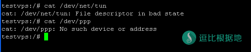
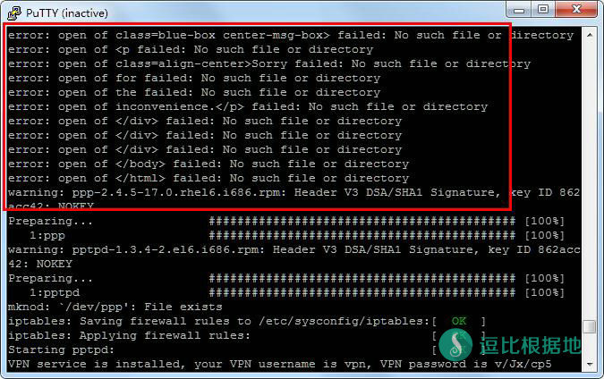
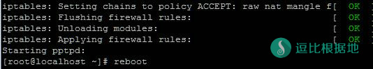

如果你在VPS上搭建了VPN并且经常使用， 尤其是OpenVPN ，请立即停止使用。VPN协议特征明显，GFW可以非常容易的检测到，从而盯上你的IP，轻则限速，重则彻底屏蔽。常见VPN协议根据易受干扰的程度从大到小依次为：OpenVPN > PPTP > L2TP > IPSec，尤其是OpenVPN，GFW已经可以实现对其定点清除(同样遭此待遇的还有SSH翻墙)。如果你想让自己VPS的IP快速报废，那么就请尽情的使用搬瓦工的控制面板搭建OpenVPN吧。（ 重要提醒： 在不明所以的情况下尽量不要在自己的VPS上搭建其他杂七乱八的翻墙服务尤其是一些早已过时和落后的翻墙方式，翻墙手段宜新不宜旧，只搭一个Shadowsocks是最能保证你翻墙效果和服务器稳定的好策略）
本教程含有Xen/KVM虚拟技术下Centos/Debian的L2TP/PPTP一键安装脚本、Openvz虚拟技术下Centos/Debian的L2TP/PPTP一键安装脚本。
脚本已失效！
其他VPN教程：
- CentOS全系列 PPTPD VPN一键安装脚本
- CentOS/Ubuntu一键安装IPSEC/IKEV2 VPN脚本
- CentOS/Debian/Ubuntu全系统 L2TP/IPSec一键安装脚本
本教程涉及SSH操作，如果你不会你需要看一下这篇文章：Linux SSH链接工具 Putty 新手详细使用教程
PPTP一键安装教程
检查PPTP环境
注意：本教程仅适用于 Centos6 和 Debian7系统 。Openvz VPS请检查TUN和PPP是否开启，Xen/KVM可以跳过！
首先要检查VPS的是否能安装pptpd，TUN和PPP是否开启。
cat /dev/net/tun
返回的必须是:
cat: /dev/net/tun: File descriptor in bad state
运行:
cat /dev/ppp
返回的必须是:
cat: /dev/ppp: No such device or address
如果返回内容不是下图的结果的话，请与VPS提供商联系更改网络权限。

下载并运行脚本
先下载脚本文件，请根据你的VPS虚拟化类型和系统版本选择合适的脚本！
Openvz VPS
Centos6：
wget --no-check-certificate https://softsmirror.cf/Bash/vpn/pptpd_centos6.sh chmod +x pptpd_centos6.sh bash pptpd_centos6.sh
Debian7：
wget --no-check-certificate https://softsmirror.cf/Bash/vpn/pptpd_debian.sh chmod +x pptpd_debian.sh bash pptpd_debian.sh
XEN/KVM VPS
Centos6：
wget --no-check-certificate https://softsmirror.cf/Bash/vpn/xen_centos_pptpd.sh chmod +x xen_centos_pptpd.sh bash xen_centos_pptpd.sh
Debian7：
wget --no-check-certificate https://softsmirror.cf/Bash/vpn/xen_debian_pptpd.sh chmod +x xen_debian_pptpd.sh bash xen_debian_pptpd.sh
运行后会有三个选择:
- 1. 安装VPN服务
- 2. 修复VPN
- 3. 添加VPN用户
首先输入1 并回车，VPS开始安装VPN服务。
如果这里出现问题，请确保上面的步骤没有漏掉或者顺序错误的，还不行就重装。
注意：如果这里如下图出现了大量的error错误代码，请按照下面的步骤【修复VPN服务】去修复一下，然后再重启VPS！（这个错误会导致连接VPN后无法上网）

添加VPN用户（可多次添加用户）
重新运行脚本
选择 3，然后输入用户名和密码（密码和root密码一样是不会显示的）。
修复VPN服务（也要执行）
这一步可以修复很多pptp的错误！修复完记得重启！
如果VPN拨号发生错误或者连接上后没有网络，可以试着修复VPN,然后重启VPS
重新运行脚本，这里我就不列出多个了，自己根据系统执行各个脚本的名字。
选择 2，出现下面四个OK结果才是修复正确！

然后输入reboot重启，VPS重启putty就会断开连接，不是错误。
Tip: 搬瓦工有小几率会出现重启失败的情况，去VPS控制面板看看是不是Running，如果不是就点Start启动VPS。
L2TP一键安装教程
注意：本教程仅适用于 Centos6 和 Debian7 系统。其实步骤就是比上面的pptp多一点。
下载并运行脚本
CentOS 6：
wget --no-check-certificate https://softsmirror.cf/Bash/vpn/l2tp_centos.sh chmod +x l2tp_centos.sh bash l2tp_centos.sh
Debian 7：
wget --no-check-certificate https://softsmirror.cf/Bash/vpn/l2tp_debian.sh chmod +x l2tp_debian.sh bash l2tp_debian.sh
运行后会有三个选择：
- 1. 安装l2tp VPN
- 2. 修复VPN
- 3. 添加VPN用户
先选择1 并回车安装。
安装过程会默认生成一个用户名 vpn ，密码为 随机数 的VPN账号。
如果想添加用户的话，请重新运行脚本，然后选择 3 并回车，输入新用户的用户名和密码即可（参考上面的PPTP，这里直接省略了）。
如何在XP上连接L2TP VPN?
按照创建pptpd VPN的方法新建一个VPN连接，然后选择“网络”属性页面，在“VPN 类型”选择“L2TP IPSec VPN”。由于windows在使用“L2TP/IPsec预共享密钥的VPN连接模式”(英文原版)情况下下仅支持证书，而对于使用psk连接l2tp/ipsec的时候则会会出现789错误，所以只有修改windows注册表，用如下方式修改：在“运行”中输入：
reg add "HKLM\SYSTEM\CurrentControlSet\Services\RasMan\Parameters" /v ProhibitIPSec /t REG_DWORD /d 1
然后重启XP，l2tp拨号，成功。
如何在windows7（vista）上连接L2TP VPN?
同样由于windowss的原因，需要修改注册表。由于windowss7权限的问题，需要下载注册表文件，解压后出现reg文件，双击运行ipsec.rar
然后重启，l2tp拨号，成功。
如何在iphone或者ipad上连接L2TP VPN?
同样由于L2TP和ipsec的原因，需要禁用ipsec： 用iFile（没有安装的话在Cydia中搜索安装）在“/etc/ppp”目录下创建一个名为“options”的普通文件，然后点击该文件用“文本查看器”打开，再编辑，输入下面的代码，完成，保存。
plugin L2TP.ppp l2tpnoipsec
然后正常连接L2TP VPN。
L2TP/ipsec一键安装教程
注意：本教程仅适用于XEN/KVM Centos5系统。其实步骤就是比上面的pptp多一点。
下载并运行脚本
wget --no-check-certificate https://softsmirror.cf/Bash/vpn/xen_centos_ipsec.sh chmod +x xen_centos_ipsec.sh bash xen_centos_ipsec.sh
运行后会有三个选择：
- 1. 安装VPN服务
- 2. 修复VPN
- 3. 添加VPN用户
首先输入1 并回车，VPS开始安装VPN服务。
然后需要输入ipsec的共享密匙，如果直接回车的话共享密匙就是”dou-bi.co”。
VPN服务安装完毕后会默认生成一个用户名为 vpn ，密码为 随机数 的VPN用户。
添加VPN用户
同样运行刚才的安装包，
bash xen_centos_ipsec.sh
选择 3 并回车，然后输入用户名和密码。
修复VPN服务
如果VPN拨号发生错误，可以试着修复VPN，然后重启VPS。
bash xen_centos_ipsec.sh
选择 2 并回车，然后reboot重启VPS。
修改VPN账户信息
如果你想再修改PPTP VPN账户，可以输入：
vi /etc/ppp/chap-secrets
然后就会显示目前的账号信息了，按I键进入vi编辑模式，然后就可以修改了，注意格式不要改错了！
用户名+空格+pptpd+空格+密码+空格+*
举个例子吧，我要添加账号用户名是toyodoubi，密码是123456，就是下面的格式
toyodoubi pptpd 123456 *
Tip： 不要用小键盘输入数字和符号，“*”请用Shift+8输入。
修改完了就按Esc键退出vi编辑模式，然后再输入:wq（注意要在英文状态下输入“:”）保存。
然后就是输入reboot重启服务器了。
如果是要删除账号的话，直接把你要删除的账号的哪一行删掉就好了！
如果你需要更换ShadowSocks密码请看搬瓦工一键ShadowSocks安装教程、Root密码和控制台登陆密码则看搬瓦工VPS更换ROOT密码和控制台密码
常见错误
VPN连接过程可能有很多错误，下面是一些VPN连接错误的原因：
691错误：用户名或密码错误。
619错误：上层路由器不支持GRE协议。您所在网络的路由器不支持，请更换路由器，或者使用L2TP连接。
742错误：服务器不支持加密连接。取消加密即可。
错误678、错误800：服务器未开启vpn服务或远程计算机无响应。
连接后无法联网：这个是安装时出错导致的，可以重新执行脚本，选择3修复VPN服务，重启后还是无法联网，请重装系统。再重新安装的时候记得看看是否有上面说的错误代码信息！有的话就去修复！
出现619,807,800等错误的，可以尝试把/etc/ppp/pptp-options文件中最后两行， 即以pre-up和post-down开头的两行注释掉。因为这两行在一些VPS中无法识别， 导致客户端无法连接，注释掉立马好了。 要排除错误可以打开/var/log/syslog文件查看。
其他VPN教程：
- CentOS全系列 PPTPD VPN一键安装脚本
- CentOS/Ubuntu一键安装IPSEC/IKEV2 VPN脚本
- CentOS/Debian/Ubuntu全系统 L2TP/IPSec一键安装脚本
转载请超链接注明：逗比根据地 » Centos/Debian系统 PPTP/L2TP 一键安装脚本
责任声明：本站一切资源仅用作交流学习，请勿用作商业或违法行为！如造成任何后果，本站概不负责！

VPN的开发目的是，保护数据传输安全，并不是不让墙发现。
Shadowsocks的开放目的是，穿透防火墙，增加墙检测匹配流量特征的成本和时间。
如果是科学上网建议Shadowsocks，因为Shadowsocks说白了就是专门拿来科学上网的，而VPN的科学上网只是其中一个功能，现在已经落后了，墙目前可以随意封锁任何VPN协议。